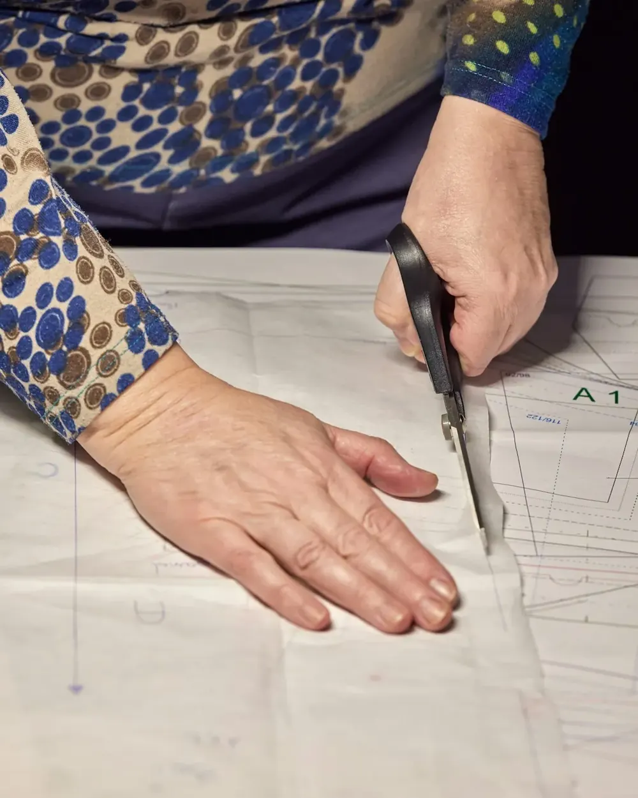
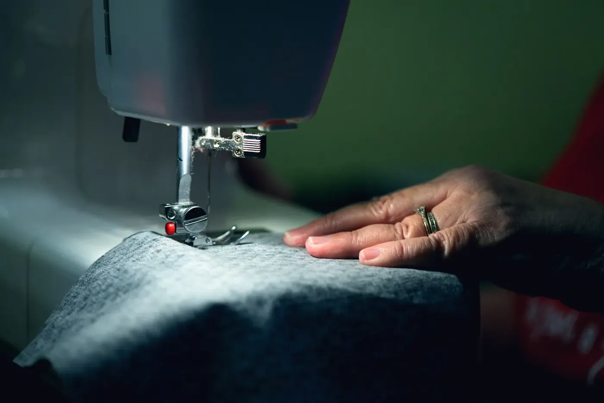
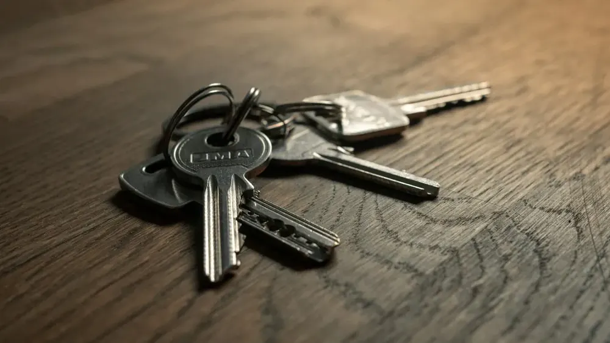
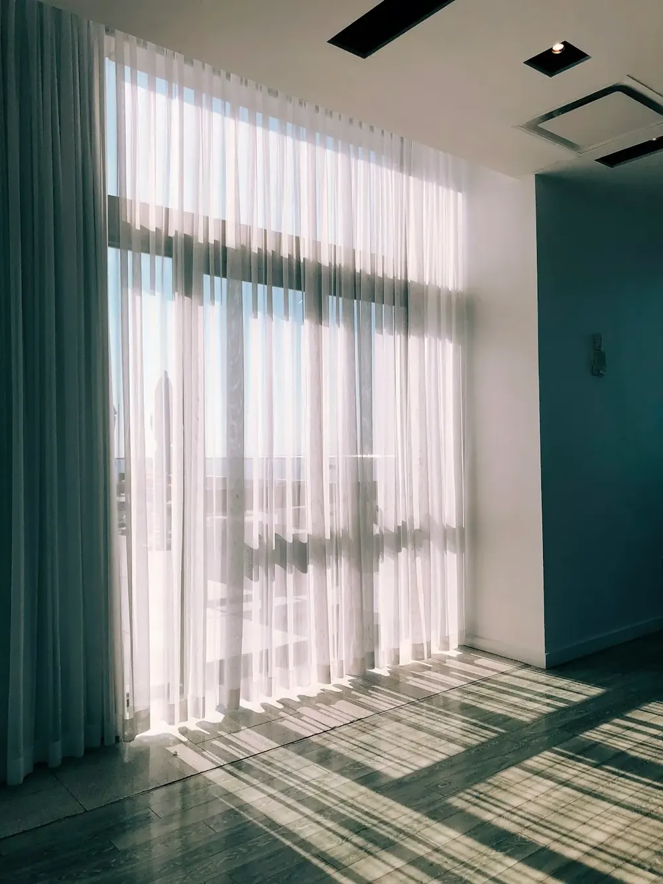
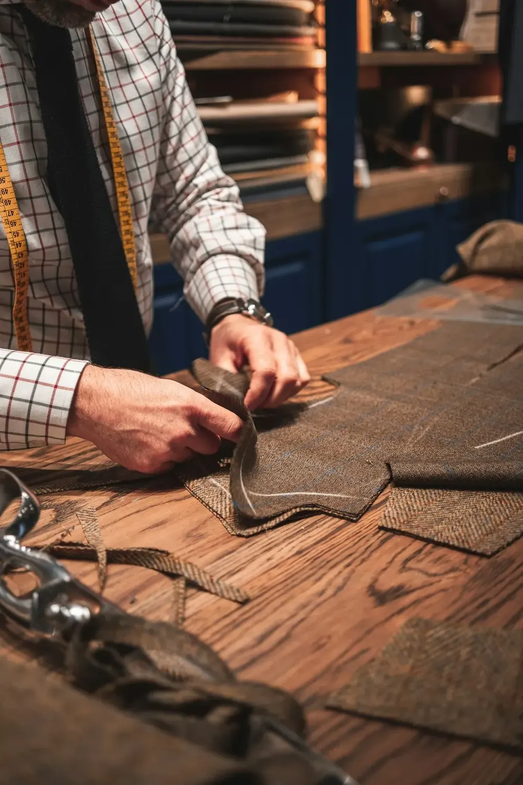
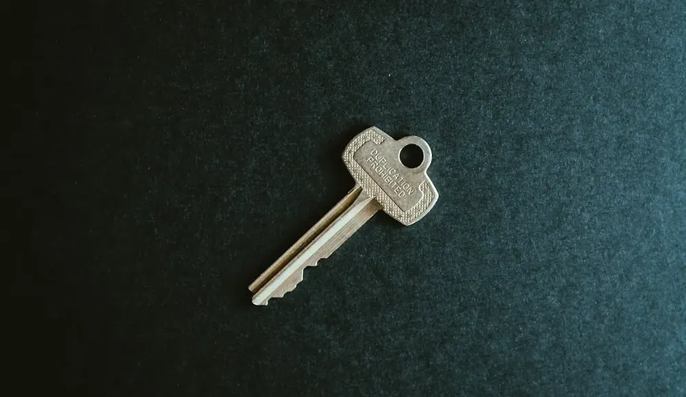
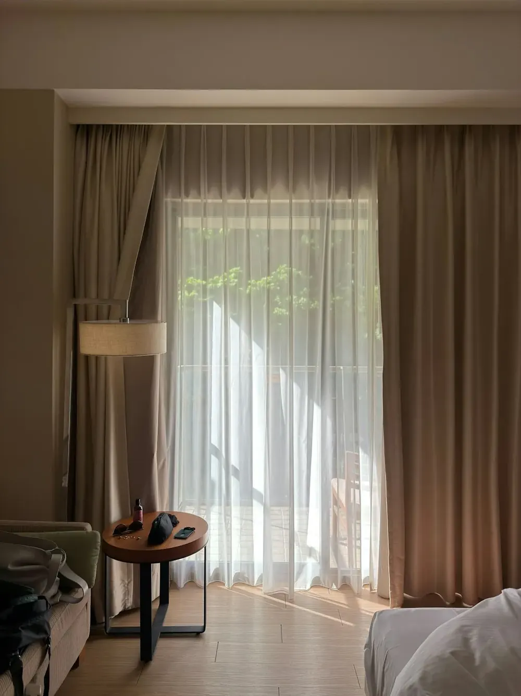
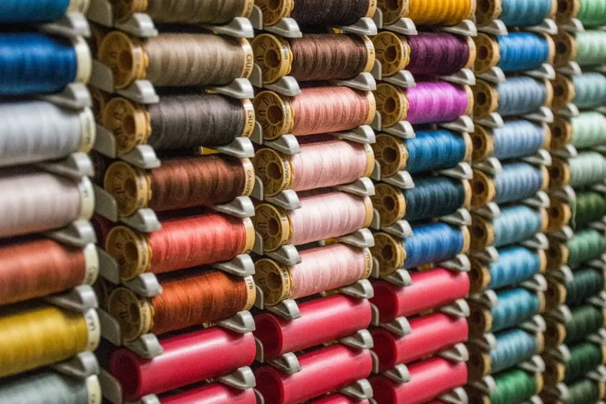
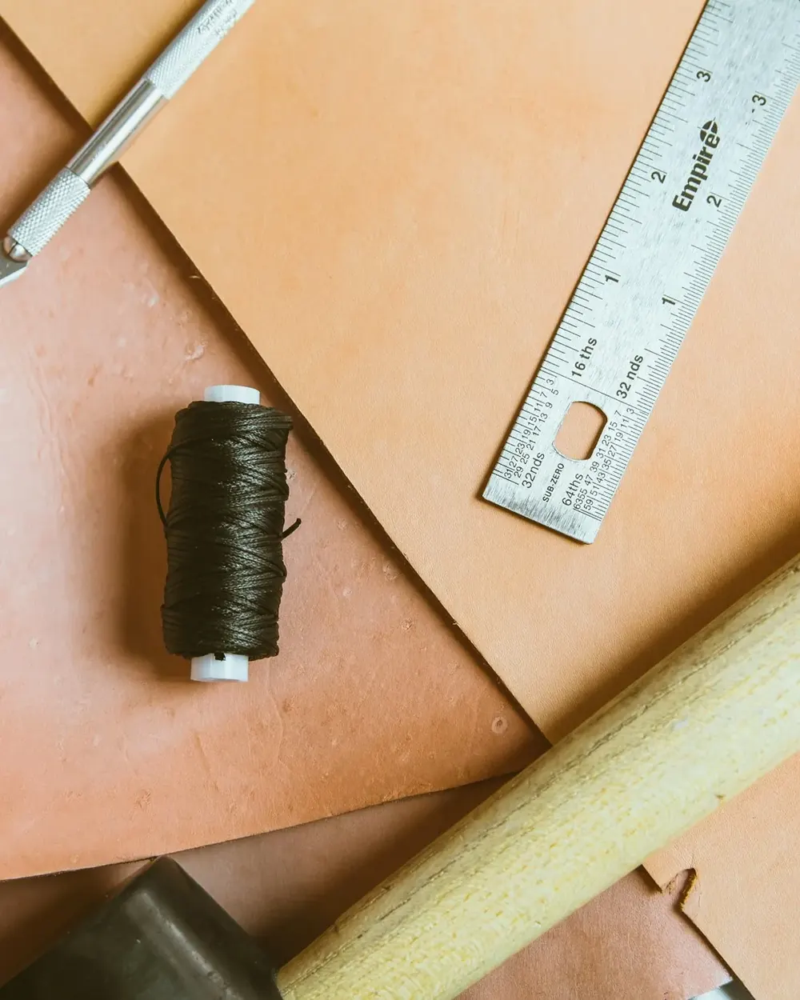
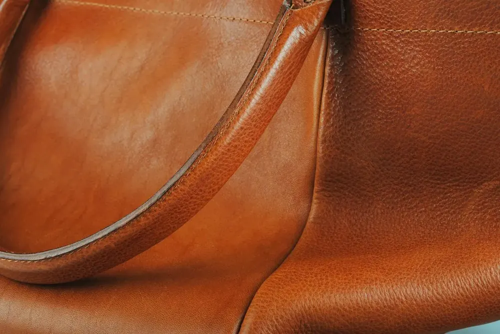

Kleding herstellen en vermaken
Inkorten, versmallen, verlengen of verbreden. Ook een kleedje helemaal omvormen.
- Broeken inkorten
- Versmallen
- Ritsen
- Zomen
Kleding inkorten en vermaken, gordijnen en kussens op maat, lederen jassen herstellen en sleutels bijmaken. Allemaal onder één dak, vriendelijk en tegen een eerlijke prijs.


Van een broek die net te lang is tot gordijnen voor je hele living. En je reservesleutel laat je meteen ook even bijmaken.

Inkorten, versmallen, verlengen of verbreden. Ook een kleedje helemaal omvormen.

Nieuwe gordijnen of bestaande op lengte. En kussens die passen bij je zetel.

Lederen jassen en broeken herstellen of aanpassen. Met de juiste naald en het juiste garen.

Een reservesleutel voor thuis, je fiets of je kot. Ook sleutels met een code en beveiligde sleutels.

Een trouwjurk die perfect moet zitten, of een kostuum dat net iets te ruim is. Met de tijd die het vraagt.

Klanten laten er zelfs hun schoenen herstellen. Twijfel je of iets kan? Stuur gewoon een foto.
Kies wat er moet gebeuren. Je ziet meteen wat je best meebrengt, zodat alles in één keer goed is. Of stuur eerst een foto, dan weet je vooraf wat kan.

In de Brusselsestraat werkt een vakman die al jaren kleren vermaakt in Dendermonde. Klanten komen terug omdat het werk netjes is, de prijzen correct en de afspraken kloppen.
Je brengt het binnen, hij kijkt mee wat er moet gebeuren en zegt eerlijk wat kan. En meestal is het snel weer klaar om op te halen.
Altijd heel vriendelijk, eerlijk, correcte prijzen, een man van zijn woord. De geleverde diensten zijn steeds naar je verwachtingen. Een echte aanrader.Sven Van Limberghen · op Google
Een kleedje met zwierrok veranderen naar strak, een onderrok verlengen, versmallen. Ik stel zijn kunnen steeds op de proef.Kathy Vanherpe · op Google
Vriendelijke man, altijd mooi afgewerkt en snel klaar!Sonia Van Riet · op Google
Kledij altijd perfect ingekort, ik ben fan!Femke Van eetvelde · op Google
Retouche aan mijn bruidsjurk was prima.Eliane De Donder · op Google
Alles steeds in orde en proper afgewerkt. Ik ben vaste klant, en het is ook altijd snel weer op te halen.Laurence Callebert · op Google
Sleutels laten bijmaken ging heel vlot.LA Desmet · op Google
Top plaats om kleding te laten inleggen of versmallen. Je kan er zelfs je schoenen laten herstellen en sleutels laten bijmaken.Christie Coppens · op Google
Toffe man, vakman, eerlijke prijzen.Giovanni Sluyts · op Google
Op vrijdag even dicht tussen 12 en 15 uur. Geen afspraak nodig, je mag gewoon binnenkomen.

Stuur een foto via WhatsApp en zeg wat er moet gebeuren. Dan weet je meteen of het kan, en wanneer het klaar is.